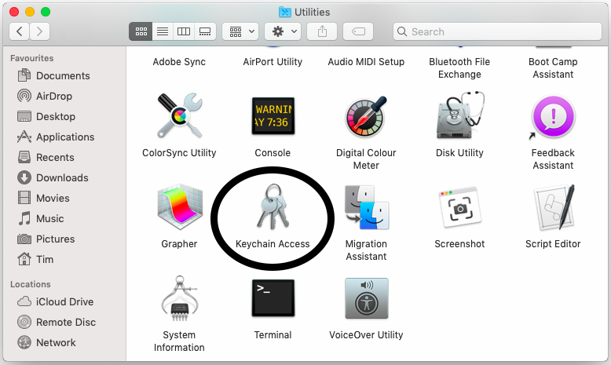
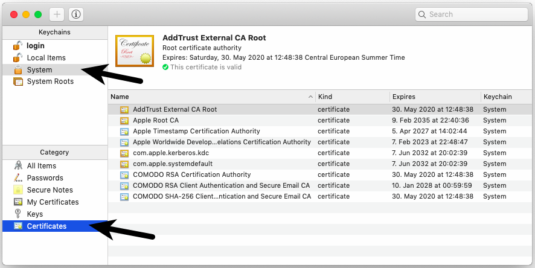

Deutsch | English
eBlocker Help > FAQs > HTTPS function (SSL/HTTPS)
How to add the eBlocker certificate in macOS.
With just a few steps you have stored the certificate. Please use the macOS Safari browser,
Open the eBlocker HTTPS configuration page, or the eBlocker Dashboard.
On the HTTPS configuration page, click the START HTTPS Wizard button, or on the eBlocker Dashboard in the HTTPS card, click the START HTTPS Wizard link.
The wizard will show you step by step how to store the eBlocker certificate in macOS.
Alternatively, you can store the eBlocker certificate without the wizard.
- On the HTTPS configuration page, click on the tab CERTIFICAT.
- Then click on the button DOWNLOAD. If necessary, you can also download the certificate by right-clicking on the button and then Save as.
- In the Finder, go to Applications > Utilities and open the Keychain Access application.

- Choose Keychain System and the Category Certificates.

- Go to the menu and choose File > Import items...

- Choose the downloaded eBlocker certificate (caCertificate.crt) in the file dialog and click Open.
- You will eventually be asked to enter the administration password.
- Double-click on the imported eBlocker certificate in the list.
- Choose "Always Trust" in the drop-down menu Secure Sockets Layer (SSL).

- Close the window. Enter the administrator password, if you are asked.
The eBlocker certificate has now been added into macOS. Most of the browsers and programs can have access to the eBlocker certificate now.
In the following browsers you should now have access to the eBlocker controlbar on HTTPS pages:
- Safari
- Google Chrome
- Opera
- Vivaldi
- Yandex
The following browsers have their own certificate store. The eBlocker certificate has to be inserted into the according certificate store.
- Firefox
- Cliqz (based on Firefox)
- Seamonkey
- Thunderbird (mail client)